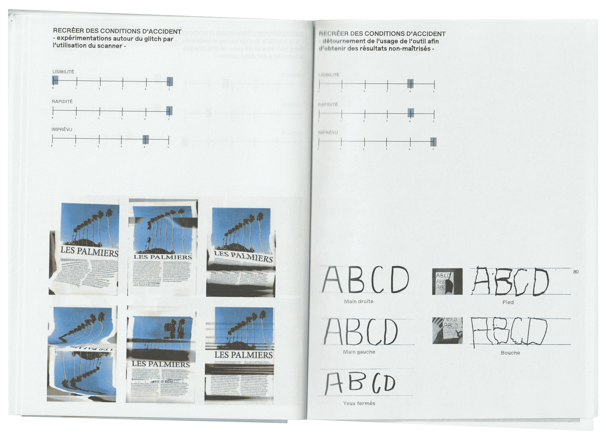
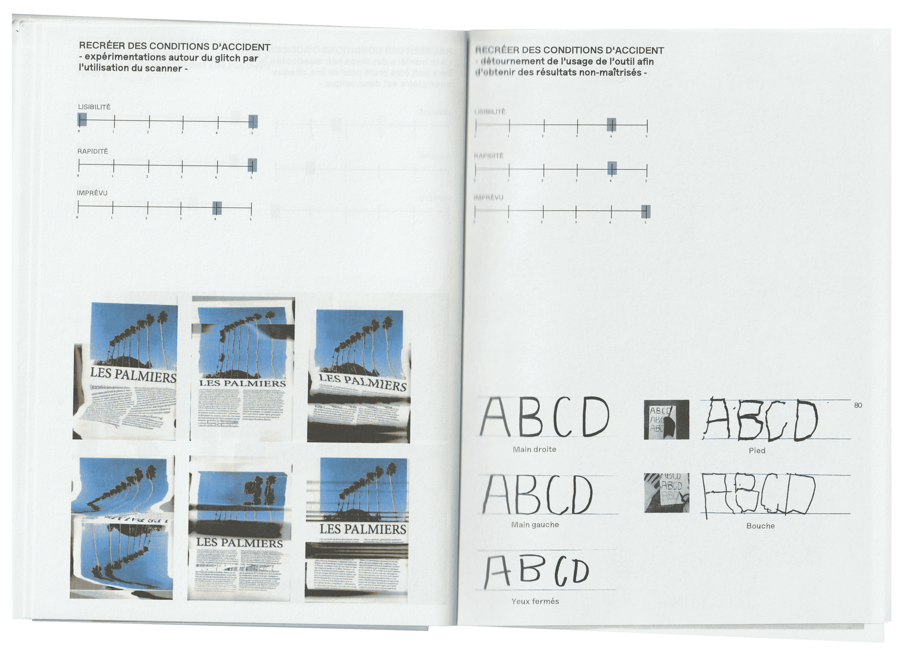

L'IMPRÉVU AU SEIN DU PROCESSUS CRÉATIF, UN OUTIL DE SINGULARISATION ?
en troisième année DNMADe Graphisme - Image de Communication
La révolution numérique a octroyé aux designers une autonomie inédite grâce à la simplification de la production graphique. Bien que cela ait accru l’efficacité, cette évolution a ses contraintes. L’élargissement des compétences a réduit le temps consacré à chaque tâche et les besoins du client ne sont que croissants.
Par ailleurs l’utilisation routinière des logiciels peut encourager, inconsciemment, le designer à reproduire des modèles existants, sclérosant sa créativité.
La place à l’accident est alors réduite. En faisant place
à l’imprévu comme élément intrinsèque de la conception, le designer peut se jouer des règles qu’il connaît, en créant ses propres outils. Cette réflexion s’est construite autour d’analyses comparatives, historiques, d’études de cas, de l’interview de Vincent Perrottet, ainsi qu’autour de la mise en place d'un protocole créatif de recherche.
regardons ça !


 
